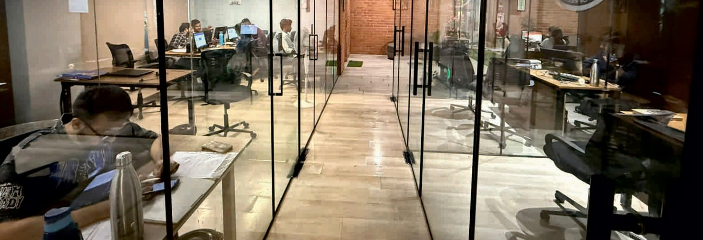

Strategy & brand building
Anand Nahar
Co-founder · Chairman & Director
Anand co-founded Zorko in Surat in 2020. With an engineering background and experience in financial markets, his work spans business strategy, brand building, and expansion.
Good people.
Bold ideas.
Full power.
A shared mindset. An everyday commitment.
Welcome to Zorko Limited. Meet the people, explore our corporate office, and discover the teams shaping the company’s next chapter.
 INSIDE ZORKO / SURAT, INDIA
INSIDE ZORKO / SURAT, INDIA
Zorko Limited is the company behind a growing food-business network. Founded by brothers Anand and Amrit Nahar in Surat, our story begins with people and a shared ambition.
Our corporate office brings together the teams supporting that ambition — from operations and training to marketing, finance, technology, and partner support.
Explore our storyFounded in Surat in 2020 by Anand and Amrit Nahar, Zorko brings a shared ambition to everyday work.
Strategy & brand building
Co-founder · Chairman & Director
Anand co-founded Zorko in Surat in 2020. With an engineering background and experience in financial markets, his work spans business strategy, brand building, and expansion.

Operations & company direction
Co-founder · Whole-time Director
Amrit co-founded Zorko with his brother Anand. His background in environmental engineering and anthropology informs his focus on operations, processes, and the company’s vegetarian food vision.

 Partnerships
Partnerships Inside Zorko
Inside Zorko